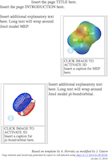
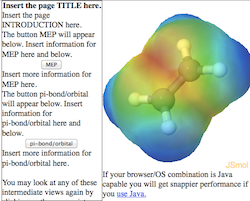
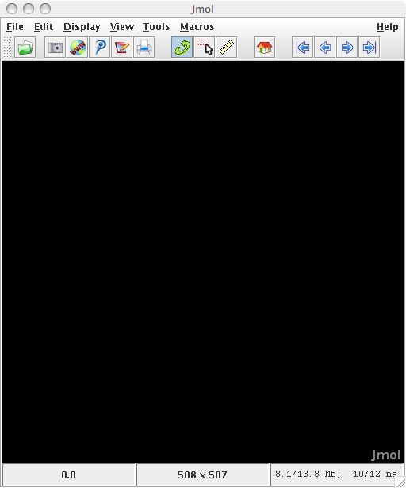

Easy Jmol Web Pages using the Jmol
Export to Web Function
By Jonathan Gutow, July 2008
(updated: January 2013)
Jmol versions 14.1.5 or greater, NOW
GENERATE JSmol (pure javascript no java necessary) PAGES
To learn more about JSmol capabilities see the Jmol
wiki .
.
The export to web function in Jmol automatically generates some
simple web pages that display views you design within the Jmol
application. You can edit the pages created using a standard web
editor to change the text and add features, such as pictures and
tables. These automatically generated pages are also a good
starting point for more complicated pages that require some hand
coding. There are also some alternative
packages for generating Jmol based web pages that require
additional software or operate from servers. At present the
"export to web..." function provides two simple templates:
| Pop-in:
this template allows you to create a page with multiple
images of your Jmol views. When a user clicks on one
of these pictures, it becomes a live JSmol/Jmol applet that
can be rotated, zoomed etc.

Figure 1: Cartoon of the
Pop-in style page.
|
ScriptButton:
this template displays a single JSmol/Jmol applet on the
right side of the browser window. On the left side is
a scrolling region with buttons that allow the user to
select the view.

Figure 2: Cartoon of the
Scriptbutton style page.
|
Possible future enhancements include: 1) addition of optional
buttons that do common things to Jmol views, such as spin the
molecule or change the background color; 2) a new template for a
table of Jmol applets; and 3) other requests as they are made by
users.
To create pages with either of these formats start Jmol and open
a file containing the molecular information you want to view. Jmol
reads many file formats including .pdb, .cif, .mol, gaussian and
gamess output files. For this tutorial I will use the gamess .log
output file from an optimization of the geometry of staggered
ethane. If you wish to follow along download the file (you may
need to right-click, ctrl-click on a one button mouse, and select
"save as.." to prevent your browser from displaying it. You can
also copy and paste from the browser into a text document): ethane-staggered-3-21G.log.
Many of the pages in this tutorial were generated using the
Jmol Export to Web function.
Getting Started (Starting Jmol
and opening a file):
Skip to making a web page if you already
have Jmol and can load structures into it.
|  |
| Figure 3: The initial view
upon opening Jmol. |
- If you haven't, Download Jmol: Get the
latest stable version from the Jmol web site (www.jmol.org). Once there follow the download links. Once
downloaded you will have to "unzip" the compressed file.
- Make sure you have a Java
Virtual Machine (JVM) Installed: This was the
default on MacOS X and recent Windows XP/Vista systems, but on
the newest versions you may need to install it. Most Linux
systems require you to install the JVM. To perform an
installation follow the instructions for your particular system.
The Oracle
Java system is
recommended although OpenJava
 also works.
also works.
- Launching Jmol: On your computer find the
file, Jmol.jar.
- On MacOS X simply
double click the Jmol.jar file to launch the program.
- On Linux
double-clicking Jmol.jar may default to uncompressing the .jar
file. In that case you will need to launch it from a command
line ("java -jar Jmol.jar") or use your GUI "Open with ..."
functionality which is usually available by right clicking on
the icon.
- On Windows the file
may be difficult to identify, because by default the
extensions are hidden and there are a number of files called
Jmol.XXX, with different extensions. In XP to show the
extensions go to the Tools menu and select "Folder
Options...". In the dialog that opens select the "View"
tab and scroll down to "Hide Extensions for Known File Types".
Uncheck this option. Click "Apply" and then "OK".
Double clicking on Jmol.jar may work, but not always (it
depends on exactly which version of Windows). You may be able
to get it to work using javalauncher. Otherwise right
click on the icon and use the "Open with.." menu item. Select
"Java Platform..." and click "OK". If this does not work and
you do have a java virtual machine installed, open the command
prompt; navigate to the proper directory and type "java -jar
jmol.jar".
- Once the program launches you will get a window that looks
like Figure 3.
- Opening a file:
In the file menu select "Open..." Use the open file dialog to
navigate to the directory your file is stored in. Select the
file and click "Open". If the file is of a type that Jmol can
read a picture of a molecule should appear.
Make a Web Page
- Familiarize yourself with Jmol. If you
already know how to make Jmol display measurements, orbitals,
change atom size and things like that skip to step 2. Otherwise
try these links on getting Jmol to display the molecule the way
you want ( indicates an
external web site that will open in a new window): Zoom
| Rotate
| Set
Spinning | Change
Atom
Size | Change
Bond
Size | Make
and
Show
Measurements | Make
Cartoon
Views of Biomolecules | Displaying
Orbitals | Using
Commands
in the Script Window | Navigating
within
a Multiframe (multi-image) File | Adding
Your
Own Text | LCAO Cartoons | Displaying Crystallographic Information | Bob
Hanson's Scripting Documentation | Much
more about Jmol and its capabilities (the Jmol Wiki).
- Make web pages using the Jmol Web Page Maker dialog.
 |
| Figure 4: The Pop-In tab
from the Export to Web (Jmol Web Page Maker) dialog. |
- General setup that is common to all templates.
- Open the Jmol Web Page Maker dialog by clicking on the
"Export to Web Page..." icon
 or by selecting
"Export to Web Page..." within the "Export" submenu of
the "File" menu. A dialog box should appear.
or by selecting
"Export to Web Page..." within the "Export" submenu of
the "File" menu. A dialog box should appear.
- Select one of the template tabs by clicking on it (I
will use the Pop-in template as an example). See Figure
4.
- The fields on the left side of the dialog contain
general setup information that is used to make the Jmol
Applet work on your server (instructions for
installing the applet on your server). The
"Help/Instructions" button provides a brief version of
the information in these tutorials.
- In the top text
field set the relative path (directions to the
directory) on the SERVER to JSmol from the
directory that will contain your web page. Use a
"../" for each level you move up in the directory
structure from where your page will be stored followed
by names for each level down. Example: JSmol
directory (called 'jsmol') is in the directory
"/www/applets" on the server, and you will be creating
the directory "/www/yourname/thispage" to hold the HTML
files and other data files. The correct path to the Jmol
applet is then "../../applets/jsmol" (up two to the www
directory and then down to the jsmol directory).
- In the second text box
set the relative path on your computer to the Jmol
applet. This allows you to test the pages without
uploading them to the server (the Mozilla browsers, FireFox
& SeaMonkey, are recommended for local testing
because of security issues). The necessary
javascript and Java files must be in a folder below the
.html page. Jmol will set this up properly for you
if you just put a "." in this field. To save space on
your server the 'jsmol' directory created within the
folder (directory) for the page should be deleted before
uploading the directory to your server. Alternative
locations of the jsmol directory no longer work for
local testing, due to increased security restrictions.
- Put in your name as the author.
- Pick a descriptive title for the page.
- Make
a web page using the Pop-in template.
- Make
a
web page using the Scriptbutton template.
Last Update: January
13, 2014
Expires: --
By J. Gutow